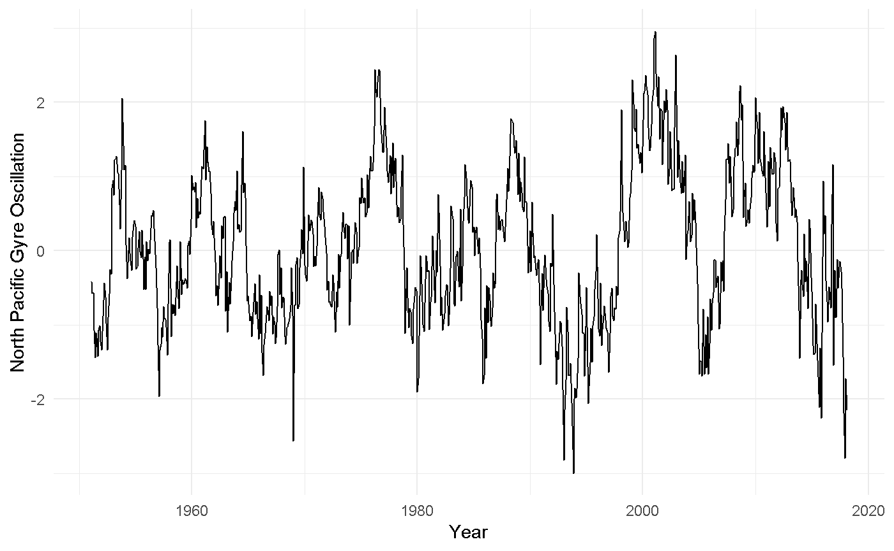

An R package to download the most up to date of these climate indices:
- Southern Oscillation Index
- Oceanic Nino Index
- North Pacific Gyre Oscillation
- North Atlantic Oscillation
- Arctic Oscillation
- Antarctic Oscillation
- Multivariate ENSO Index Version 2
Usage
Download Oceanic Nino Index data
oni <- download_oni()
head(oni)
#> # A tibble: 6 x 7
#> Date Month Year dSST3.4 ONI ONI_month_window phase
#> <date> <ord> <int> <dbl> <dbl> <chr> <fct>
#> 1 1950-01-01 Jan 1950 -1.62 NA JF <NA>
#> 2 1950-02-01 Feb 1950 -1.32 -1.34 JFM Warm Phase/El Nino
#> 3 1950-03-01 Mar 1950 -1.07 -1.17 FMA Warm Phase/El Nino
#> 4 1950-04-01 Apr 1950 -1.11 -1.18 MAM Warm Phase/El Nino
#> 5 1950-05-01 May 1950 -1.37 -1.07 AMJ Warm Phase/El Nino
#> 6 1950-06-01 Jun 1950 -0.74 -0.85 MJJ Warm Phase/El NinoAnd a quick plot to illustrate the data:
barcols <- c('#edf8b1','#7fcdbb','#2c7fb8')
barplot(oni$ONI, names.arg = oni$Date, ylab = "Oceanic Nino Index" ,
col = barcols[oni$phase], border = NA, space = 0,
xaxt = "n")
Inspired by
The idea for this package borrows heavily from the rpdo package. The initial efforts by these authors are gratefully acknowledged. The rpdo github page can be found here: rpdo
Data Sources
- Southern Oscillation Index: https://www.ncdc.noaa.gov/teleconnections/enso/indicators/soi/
- Oceanic Nino Index data: http://www.cpc.ncep.noaa.gov/products/analysis_monitoring/ensostuff/detrend.nino34.ascii.txt
- Northern Pacific Gyre Oscillation: http://www.o3d.org/npgo/data/NPGO.txt
- North Atlantic Oscillation: https://www.ncdc.noaa.gov/teleconnections/nao/data.csv
- Arctic Oscillation: https://www.ncdc.noaa.gov/teleconnections/ao/data.csv
- Anarctic Oscillation: https://www.cpc.ncep.noaa.gov/products/precip/CWlink/daily_ao_index/aao/monthly.aao.index.b79.current.ascii
- Multivariate ENSO Index Version 2 (MEI.v2): https://www.esrl.noaa.gov/psd/enso/mei/
Helpful References
In Watching for El Niño and La Niña, NOAA Adapts to Global Warming
The Victoria mode in the North Pacific linking extratropical sea level pressure variations to ENSO
Please note that the ‘rsoi’ project is released with a Contributor Code of Conduct. By contributing to this project, you agree to abide by its terms.